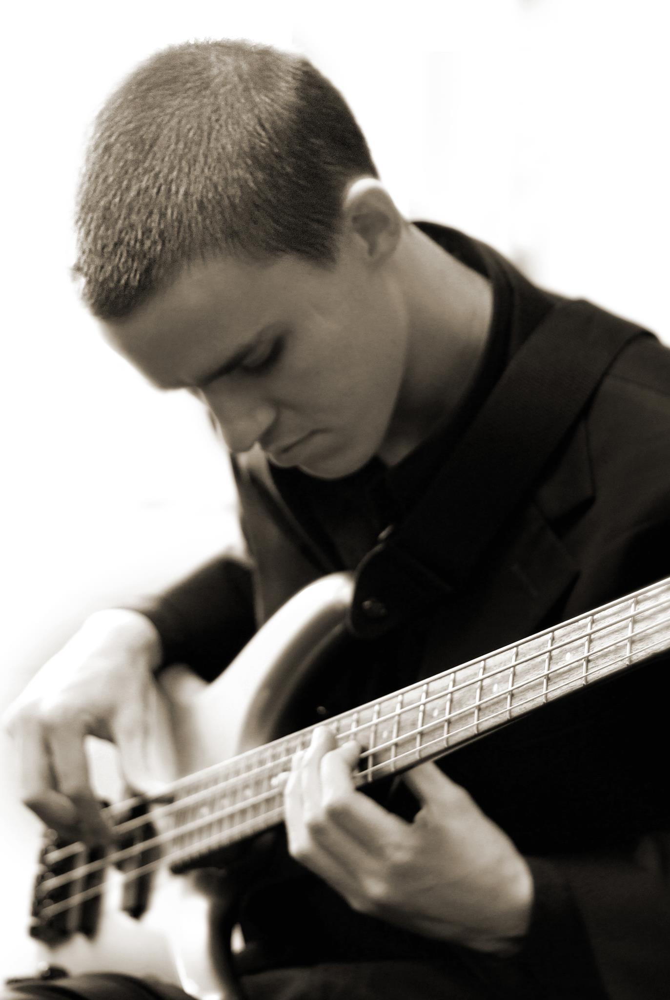
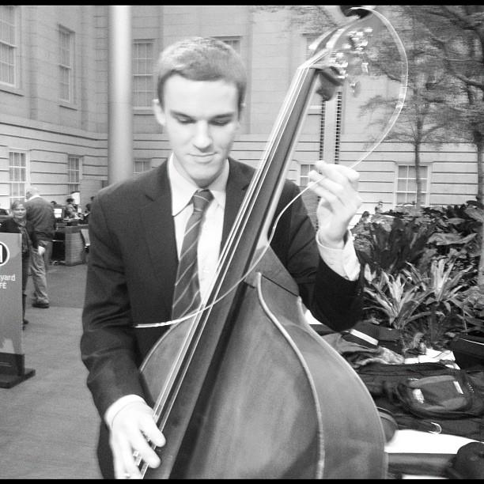

Eliot Seppa plays upright and electric bass in the Washington, D.C. area. While growing up in Silver Spring, Md., he studied classical bass with the late George Vance from age nine until college. During high school, he also studied jazz bass with Pepe Gonzalez and participated in master classes with world renowned bassists Francois Rabbath and Rufus Reid. In his teen years, Eliot began playing bass as much as possible -- in orchestras, pit orchestras, big bands, jazz combos, rock bands and hip-hop bands. He started going to jazz clubs to check out the world class musicians that D.C. has to offer and soon began sitting in with many of them.

Eliot attended Howard University on a full scholarship and graduated in 2013 with a Bachelor of Music -- Jazz Studies. He continued to study classical bass with Jeffrey Koczela and jazz bass with Steve Novosel, as well as some classical piano with Karen Walwyn, jazz piano with Charles Covington and jazz improvisation with Charlie Young. He played in the award winning Howard University Jazz Ensemble, Jazztet and Chamber Orchestra. Eliot played on countless recitals, backing up jazz singers and instrumentalists. He frequently played with Howard’s premiere jazz choir, Afro Blue. In May 2013, he traveled to Senegal with the Jazztet to play concerts and conduct master classes at schools all around the country. The trip culminated with the Jazztet headlining the St. Louis Jazz Festival, Africa’s biggest jazz festival. In December 2013, he had the honor of performing at the White House with Afro Blue. While studying at Howard, Eliot played with guest performers and lecturers such as McCoy Tyner, Pharoah Sanders, Geri Allen, Greg Osby, Wayne Linsey, Jimmy Owens, Larry Willis, Bobby Watson and Javon Jackson. He recorded four albums with the Howard University Jazz Ensemble, two albums with Afro Blue and one album with the Howard University Jazztet.
Eliot was just as busy outside of school. Realizing that experience is indeed the best teacher, he began playing as many gigs as possible. This led him to musical situations that were very new to him, including jazz duos, Brazilian bands, Afro-beat bands, wedding bands, neo-soul bands, gigs with tap dancers and gospel choirs. He has had the opportunity to play at all of the jazz clubs in Washington, as well as many dance clubs, churches, public buildings and most of the area’s music festivals. He has played with many of the finest musicians from D.C. and abroad including Cyrus Chestnut, Hugh Masekela, Warren Wolf, Chuck Redd, Greg Tardy, Freddie Redd, Federico Pena, Charles Covington, Allyn Johnson, Todd Marcus, Diggs Duke, Lena Seikaly, Elijah Balbed and Braxton Cook. In July 2014, Eliot went on a mini-tour with the great Malian griot Cheick Hamala Diabate, which included performances at the Toronto Afrofest and the Clark Street Festival in Chicago. Being exposed to the new school, the old school and everything in between has helped Eliot develop his own unique musical voice as a bass player, a composer and a bandleader. He has also established a reputation as an excellent studio musician and has recorded on many projects.
Currently, Eliot plays at Mount Moriah Baptist Church every Sunday for both services. He also performs regularly with Sitali, Sharon Clark, the Jogo Project, Afro Blue, Donvonte McCoy, Mark Meadows, Tim Whalen, Jonathan Parker and many others. As a freelance musician his bookings are subject to change at any time. Click here for an up-to-date schedule!